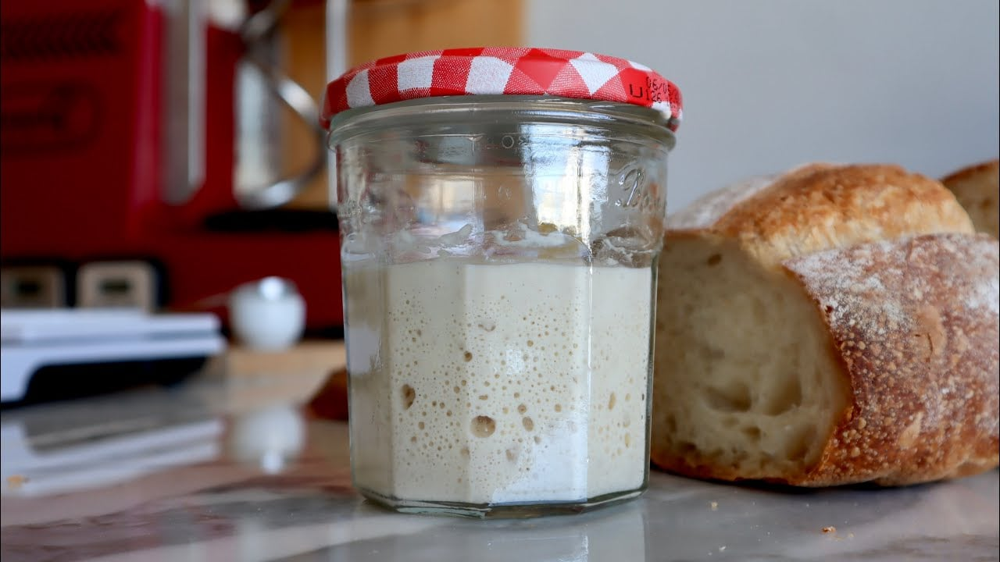

요리왕 비룡에 보면 만두를 만드는 밀가루를 매번 반죽할 때마다 일정량 떼서 보관하고 다음 반죽에 쓰는 노면(老麵)이라는 게 등장함.
기본적으로 이스트를 쓰기 전부터 자연 유산균과 효모를 이용해서 반죽을 부풀리는 전통적인 방식이다.
만화에서는 촉한시절부터 내려온 노면이라고 뻥을 좀 치긴 하는데...
사실 이건 중국에만 존재하는 게 아니다.

이제는 사람들에게 익숙한 사워도우 빵을 만들때 쓰는 천연발효종인 르방, 그 가운데 이스트를 쓰지 않은 르방 네츄럴이 저 만화에 나오는 노면과 같은 역할이다.
제빵에 취미를 들인 사람들 중에 저 르방을 키으고 애지중지 하는 사람들도 많다.
참고로 관리 잘못하면 망한다.
흔한 문화임. 씨간장도 그렇고